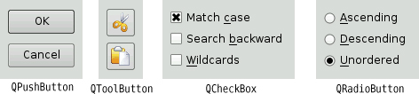
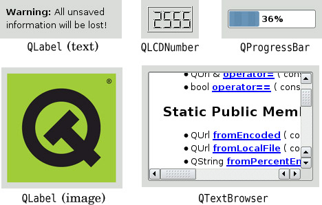

Qt provides a complete set of built-in widgets and common dialogs that cater to most situations. In this section, we present screenshots of almost all of them. A few specialized widgets are deferred until later: We cover main window widgets such as QMenuBar, QToolBar, and QStatusBar in Chapter 3, and we cover layout-related widgets such as QSplitter and QScrollArea in Chapter 6. Most of the built-in widgets and dialogs are used in the examples presented in this book. In the screenshots shown in Figures 2.17 to 2.26, all the widgets are shown using the Plastique style.




Qt provides four kinds of "buttons": QPushButton, QToolButton, QCheckBox, and QRadioButton; they are shown in Figure 2.17. QPushButton and QToolButton are most commonly used to initiate an action when they are clicked, but they can also behave like toggle buttons (click to press down, click to restore). QCheckBox can be used for independent on/off options, whereas QRadioButtons are normally mutually exclusive.
Qt's container widgets are widgets that contain other widgets. They are shown in Figure 2.18 and Figure 2.19. QFrame can also be used on its own to simply draw lines and serves as the base class for many other widget classes, including QToolBox and QLabel.
QTabWidget and QToolBox are multi-page widgets. Each page is a child widget, and the pages are numbered starting from 0. For QTabWidgets, both the shape and the position of the tabs can be set.
The item views, shown in Figure 2.20, are optimized for handling large amounts of data and often use scroll bars. The scroll bar mechanism is implemented in QAbstractScrollArea, a base class for item views and other kinds of scrollable widgets.
The Qt library includes a rich text engine that can be used for displaying and editing formatted text. The engine supports font specifications, text alignments, lists, tables, images, and hyperlinks. Rich text documents can be created pro-grammatically element by element or supplied as HTML-formatted text. The precise HTML tags and CSS properties that the engine supports are documented at http://doc.trolltech.com/4.3/richtext-html-subset.html.
Qt provides a few widgets that are used purely for displaying information; they are shown in Figure 2.21. QLabel is the most important of these, and it can be used for showing plain text, HTML, and images.
QTextBrowser is a read-only QTextEdit subclass that can display formatted text. This class is used in preference to QLabel for large formatted text documents, because unlike QLabel, it automatically provides scroll bars when necessary, and also provides extensive support for keyboard and mouse navigation. Qt Assistant 4.3 uses QTextBrowser to present documentation to the user.
Qt provides several widgets for data entry, as shown in Figure 2.22. QLineEdit can restrict its input using an input mask, a validator, or both. QTextEdit is a QAbstractScrollArea subclass capable of editing large amounts of text. A QTextEdit can be set to edit plain text or rich text. In the latter case, it is able to display all of the elements that Qt's rich text engine supports. Both QLineEdit and QTextEdit are fully integrated with the clipboard.
Qt provides a versatile message box and an error dialog that remembers which messages it has shown—these are shown in Figure 2.23. The progress of time-consuming operations can be indicated using QProgressDialog or using the QProgressBar shown in Figure 2.21. QInputDialog is very convenient when a single line of text or a single number is required from the user.
Qt provides the standard set of common dialogs that make it easy to ask the user to select a color, font, or file, or to print a document. These are shown in Figure 2.24 and Figure 2.25.
On Windows and Mac OS X, Qt uses the native dialogs rather than its own common dialogs when possible. Colors can also be chosen using one of the Qt Solutions color selection widgets, and fonts can be chosen using the built-in QFontComboBox.
Finally, QWizard provides a framework for creating wizards (also called assistants on Mac OS X). Wizards are useful for complex or infrequent tasks that users may find difficult to learn. An example of a wizard is shown in Figure 2.26.
A lot of ready-to-use functionality is provided by the built-in widgets and common dialogs. More specialized requirements can often be satisfied by setting widget properties, or by connecting signals to slots and implementing custom behavior in the slots.
If none of the widgets or common dialogs provided with Qt is suitable, one may be available from Qt Solutions, or from a commercial or non-commercial third party. Qt Solutions provides a number of additional widgets, including various color choosers, a thumbwheel control, pie menus, and a property browser, as well as a copy dialog.
In some situations, it may be desirable to create a custom widget from scratch. Qt makes this straightforward, and custom widgets can access all the same platform-independent drawing functionality as Qt's built-in widgets. Custom widgets can even be integrated with Qt Designer so that they can be used in the same way as Qt's built-in widgets. Chapter 5 explains how to create custom widgets.